| 日付 | 2017年5月3日（水） - 2017年5月6日（土） | ||
|---|---|---|---|
| 山域 | 東北の山 | ||
| メンバー | 家族（妻、長女・6歳、長男・3歳） | ||
| 山行形態 | 子連れ3泊4日ホテル泊 | ||
| アクセス | 車、リフト | ||
| ルート (Map) |
|
今年のGWは宮城に行くことにする。
蔵王や松島など全国的に名高い観光地があり魅力的なところだ。
一つくらいは山にも登る計画を立て、東北道で宮城に向かう。
1日目
東北道はあちらこちら渋滞だらけで、13時前にようやく白石ICに到着する。
お昼時なので、IC近くの白石温麺茶屋で昼食をとる。
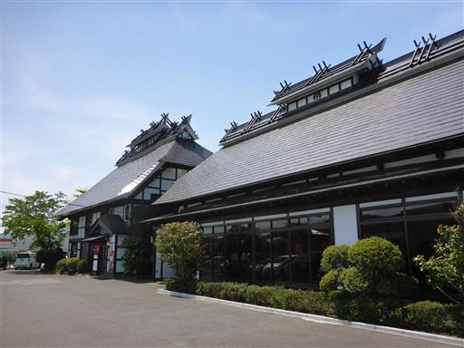
古民家を改造した建物らしく趣がある。
しかし店内に入っても忙しいのか、なかなか従業員がやって来ない…
ちなみに温麺とは白石市の特産で、素麵とよく似た食べ物だ。
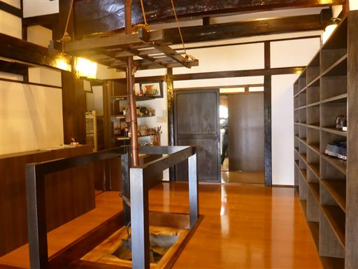
天気予報を見る限り本日が一番好天のため、初日は蔵王を目指すことにする。
蔵王エコーラインを登っていくと、雪に覆われた山々が見えてくる。
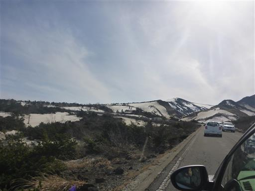
雪の壁が出てきて気分が盛り上がる。
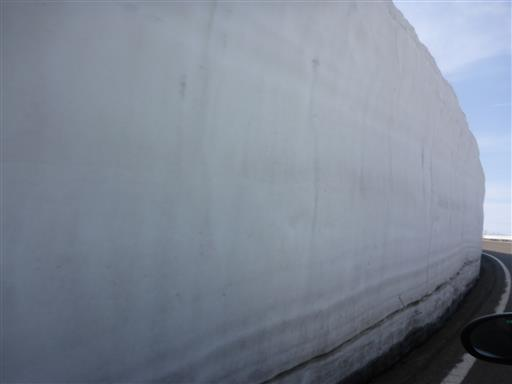
しかし途中で車の流れはストップ。渋滞に巻き込まれてしまった。
駐車場に入る車の列のため、なかなか前に進まない。これは誤算だ。
これまでGWはうまく混雑を避けられていたため、計画時に混雑を考慮に入れるのを完全に忘れていた…
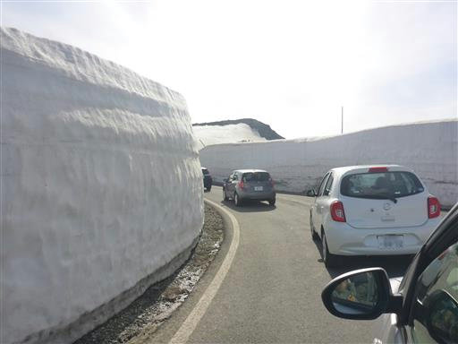
雪の壁から木の枝がはみ出している。あまり美しくない姿だ…
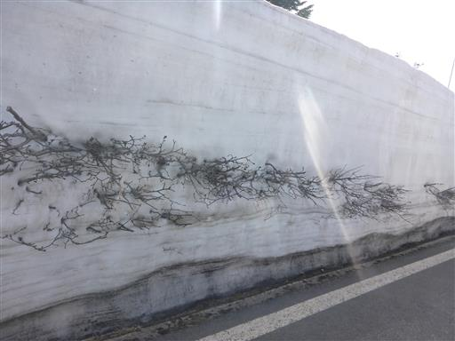
有料道路の蔵王ハイラインは渋滞が続いていたため、
蔵王ハイラインは使わずにリフトで上まで行くことにする。
こちらは比較的空いていて、ようやく車を停めることができる。もう16時前だ。
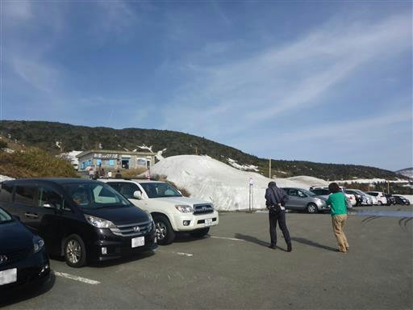
リフトは一人乗り。子供料金は無く、往復750円/人と距離の割には少々高い。
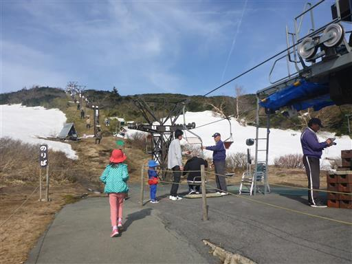
リフトからは大展望が広がる。今日は素晴らしい快晴だ。
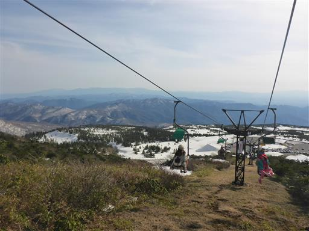
遠くにぼんやり見えるのは飯豊連峰。
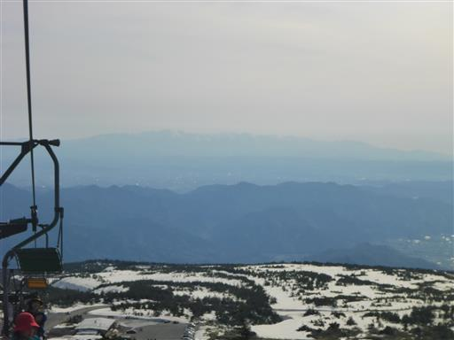
こちはら朝日連峰。
この辺りの地理には詳しくないため、飯豊も朝日も帰ってから調べて分かったことだ。
見たときに山名が分かっていればもっと感動があったのだが…
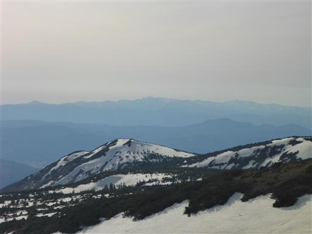
娘はなぜかリフトに正座をしている。
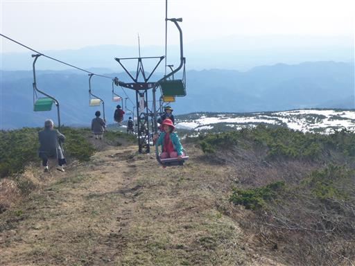
リフトを下りると蔵王のなだらかな斜面が目の前に広がる。
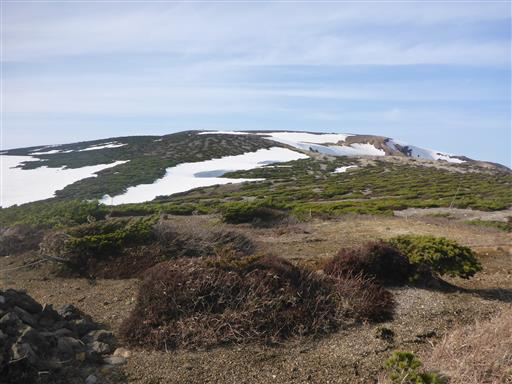
遊歩道が完全に整備されている。ここは山というより観光地だ。
足早に御釜を目指す。
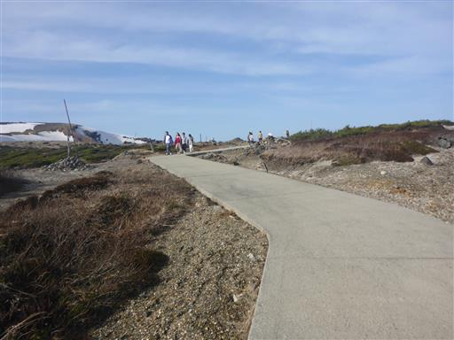
御釜へのアプローチは雪に覆われていて除雪されていない。
観光客は雪の上を歩いて向かっているため、我々もそれに倣って歩いていく。
登山靴を履いてくるべきであった。
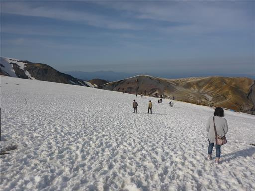
御釜に到着。まだ半分凍っていて深い緑色の水は少ししか見えない。
それでも快晴の下の御釜を見られて満足だ。
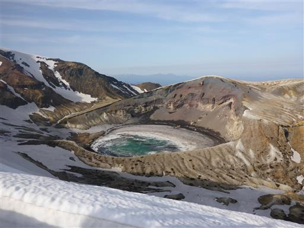
周囲に広がる荒々しい風景。
蔵王はその風景も混雑具合も、草津とよく似ている。
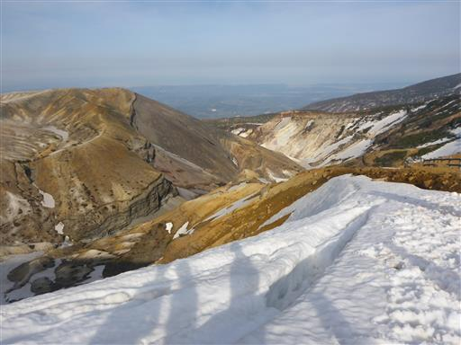
目の前の雪は大きなクラックができている。このまま崩れ落ちそうだ。
周囲を見渡すと雪に埋もれた柵が後ろにあり、この場所は土の上ではなさそうだ。
皆、縁まで近づいているが、遠くの雪の側面を見ても分かる通りかなり危険だ。
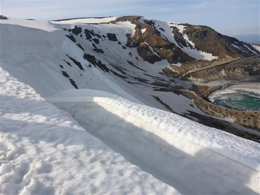
再び遊歩道に戻って、次は刈田岳に向かう。目の前に見える小さな丘だ。
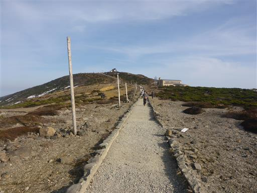
歩きやすい緩やかな道を登っていく。
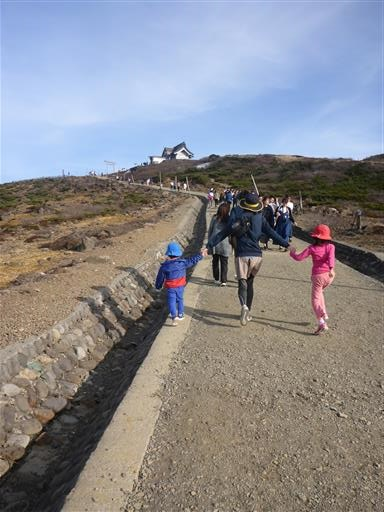
振り返ると、御釜に続く雪の上を多くの観光客が歩いている。
御釜に向かって雪の斜面に蛇行した線が見えるが、スキーヤーが滑り降りた跡だろうか？
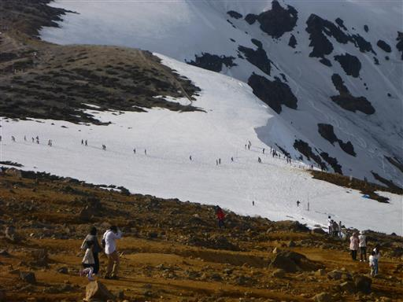
刈田岳山頂に到着する。標高1758m。

子供たちは山頂にある積まれた石の上に登って遊んでいる。
石が積まれた塔があちらこちらにあるが、いつ誰が何のために積んだのだろう？
登るのは罰当たりなのだろうか…？
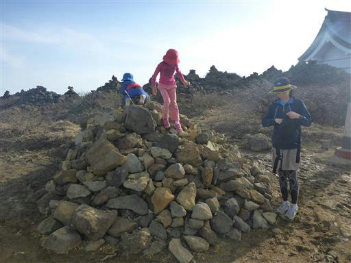
山頂からは大展望が広がる。
遠くに見えているのは吾妻山、左に見えるピークは安達太良山だ。
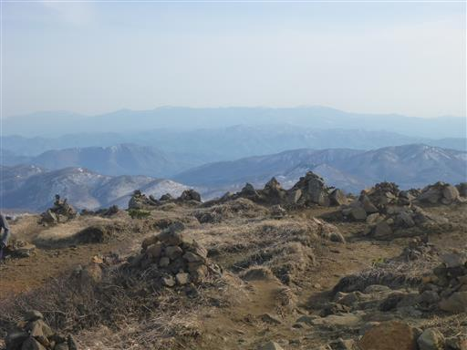
こちらは北蔵王と二口山塊の山々、右奥の大きな山は船形山だ。
左奥に栗駒山が薄らと見えている。
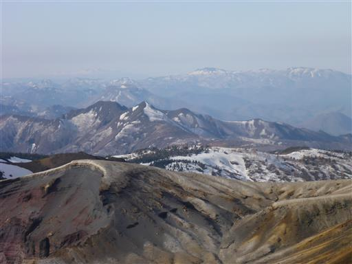
ここからも御釜を見下ろすことができる。
蔵王ハイラインから車で刈田岳に来た人は、ここから御釜を眺めている。
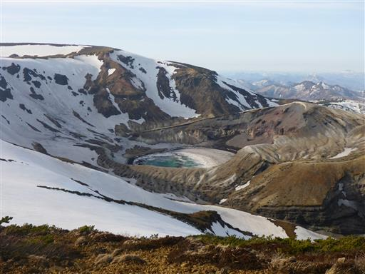
刈田嶺神社でお参りをしてから下山することにする。

リフトに乗って下山。もう17時前だ。
時間が許せば蔵王山最高峰の熊野岳まで行ってみたかったのだが、少しの観光で終わってしまった。
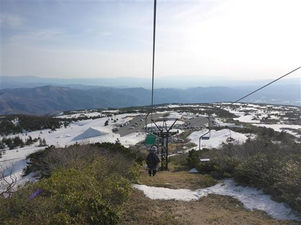
駐車場側の雪山で少し雪と戯れる。
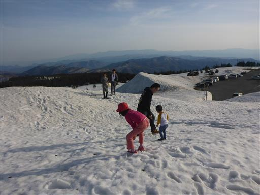
本日の宿「民宿 大久」に到着。
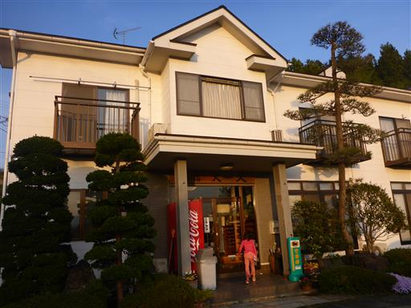
設備、食事とも質素で合宿で使われる民宿という感じ。
まあ安宿なので仕方がない。